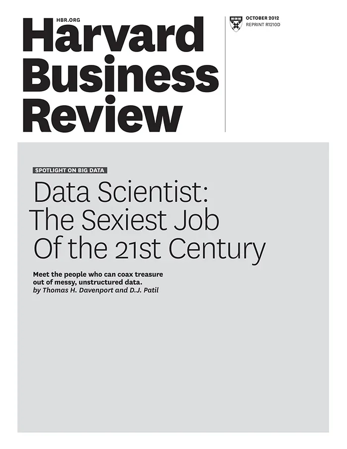
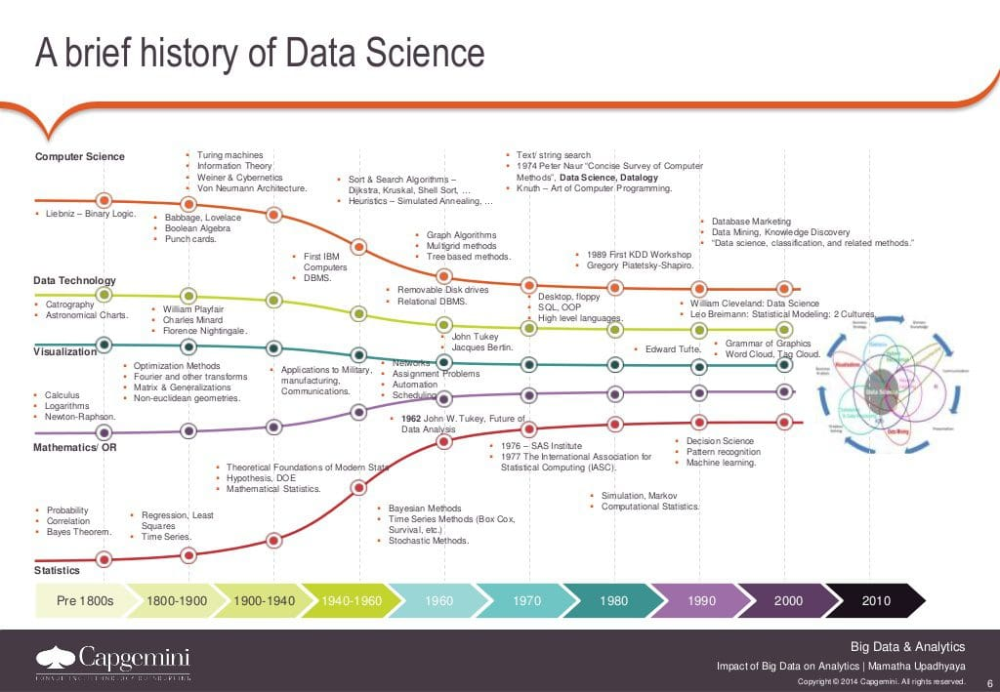
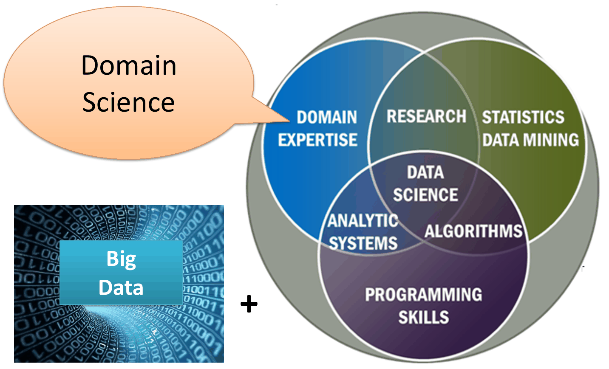
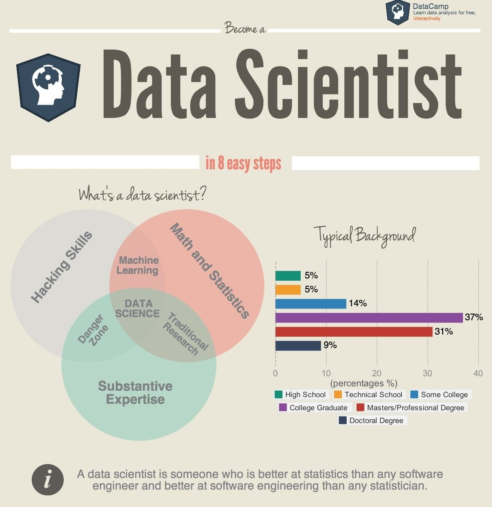
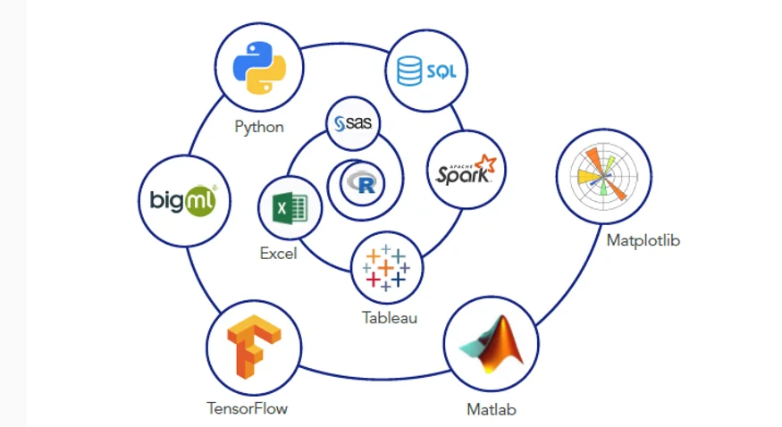

[1] 41Presentación del curso
Introducción a R
Maestría en Ciencias Médicas, Odontológicas y de la Salud · UNAM
Semestre 2027-1 · Laboratorio de Biología Computacional, INER
Dra. Yalbi Itzel Balderas-Martínez
LABBIC — INER

Bienvenida
Este curso lo imparte el Laboratorio de Biología Computacional del Instituto Nacional de Enfermedades Respiratorias.
El reparto de quién da cada tema está en el documento de programación del curso.
Para cualquier duda
Escríbenos por Google Classroom, no por correo. Ahí queda registrada, la ve todo el profesorado del curso y la respuesta le sirve a quien tenga la misma pregunta.
Qué vas a poder hacer al terminar
Tomar una tabla de datos de tu propio proyecto, limpiarla, describirla y graficarla en R, dejando el análisis escrito de forma que otra persona pueda repetirlo.
Dicen que tenemos un trabajo atractivo

Harvard Business Review, portada de octubre de 2012.
Qué quería decir esa portada
Que la ciencia de datos reúne cualidades que están en alta demanda.
No se refería a tener formación científica o habilidades de cómputo. Se refería a tenerlas juntas, que es lo raro.
Entonces, ¿qué es la ciencia de datos?
Un campo interdisciplinario que usa métodos, procesos, algoritmos y sistemas científicos para extraer conocimiento de datos, estén organizados en una tabla o no.
No es un campo nuevo

Fuente: Capgemini. Sirve para ver cuánto tiempo lleva esto, no para leer cada etiqueta.
Dónde se cruza con lo que ya sabes

Diagrama del NIST Big Data Working Group: la ciencia de datos vive en la intersección de matemáticas y estadística, cómputo, y conocimiento del dominio.
El dominio eres tú

En biología y salud, ese tercer círculo es el que tú ya traes. Es la parte que no se aprende en un curso de programación.
¿Quién puede dedicarse a esto?

Qué herramientas se usan

Fuente: introtallent.com.
Qué es R
Un ambiente de software libre para cómputo estadístico y gráficos. Corre en Windows, macOS y Linux.
Lo desarrollaron personas expertas en estadística a partir del lenguaje S, creado por John Chambers y colegas en los Laboratorios Bell.
Qué gana quien lo usa
- Es libre: no depende de una licencia que se venza.
- Las figuras que produce son de calidad de publicación.
- Se extiende instalando paquetes.
- Está hecho por y para gente que analiza datos.
Qué cuesta
- Requiere tiempo de entrenamiento: para obtener justo lo que quieres, hay que conocer el lenguaje.
- Algunos paquetes están mal documentados o abandonados.
- Ciertas tareas se resuelven más fácil en otro lenguaje.
Qué es RStudio
Un ambiente de desarrollo integrado: consola, editor, gráficas y área de trabajo en una sola ventana.
R es el motor; RStudio es el tablero desde el que lo manejas. Puedes usar R sin RStudio, pero casi nadie lo hace.
Y Posit Cloud es ese mismo RStudio
La misma ventana, corriendo en un servidor en vez de en tu computadora.
Lo que aprendas aquí sirve igual el día que instales R en tu máquina: no es una versión reducida ni un simulador.
No vas a instalar nada
Trabajamos en Posit Cloud: RStudio dentro del navegador.
Creas una cuenta gratuita y ya. No hay descargas, ni versiones distintas, ni permisos de administrador.
Por qué en la nube
Trabajamos sobre exactamente el mismo R, con los mismos paquetes ya instalados.
Si algo falla, falla igual para todo el grupo y se resuelve una vez. Instalar en cada computadora convierte la primera clase en soporte técnico.
Lo único que necesitas
- Una computadora con navegador
- Conexión a internet
- Tu cuenta de Posit Cloud
Funciona igual en Windows, macOS y Linux.
Si más adelante quieres R en tu propia computadora, se puede. Lo vemos al final del curso, cuando ya sepas qué estás instalando.
Cómo se ve un análisis en R
La primera línea guarda cinco edades en un objeto llamado edades. La segunda pide su promedio. Nada más.
Por qué escribirlo en vez de hacerlo a mano
En una hoja de cálculo las operaciones se hacen a mano y no queda registro.
En R, el archivo de instrucciones es el registro. Si alguien pregunta cómo obtuviste una cifra, se vuelve a correr y da lo mismo. Eso se llama reproducibilidad, y es la razón de fondo de este curso.
De qué trata el curso
Un curso introductorio para aprender a programar en R y analizar tus datos.
No necesitas conocimientos previos de programación.
Cómo está armado
| Recurso | Para qué sirve |
|---|---|
| Diapositivas | lo que vemos juntos en clase |
| Manual | la versión escrita, para consultar después |
| Notebooks | los ejercicios que corres tú |
| Tareas | lo que entregas para evaluación |
Cómo se evalúa
| Componente | Peso |
|---|---|
| Tareas en DataCamp | 20 % |
| Primer examen | 25 % |
| Segundo examen | 25 % |
| Proyecto final en R | 30 % |
Asistencia mínima: 80 %.
Criterios heredados de la edición anterior. Confirmar para 2027-1 en docs/programa-operativo/.
Un recurso extra
Por estar en el curso tienes acceso a la versión completa de DataCamp para aprender R.
Sujeto a que el curso siga inscrito en DataCamp for the Classroom en 2027-1.
Empezamos
La siguiente sesión abre RStudio y escribe la primera línea de código.
Introducción a R · Maestría en Ciencias Médicas, UNAM · LABBIC-INER · 2027-1